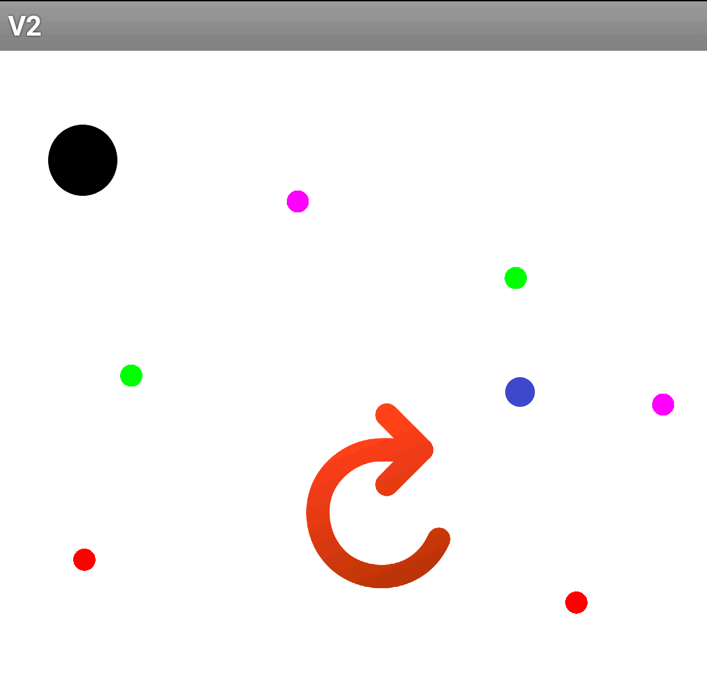
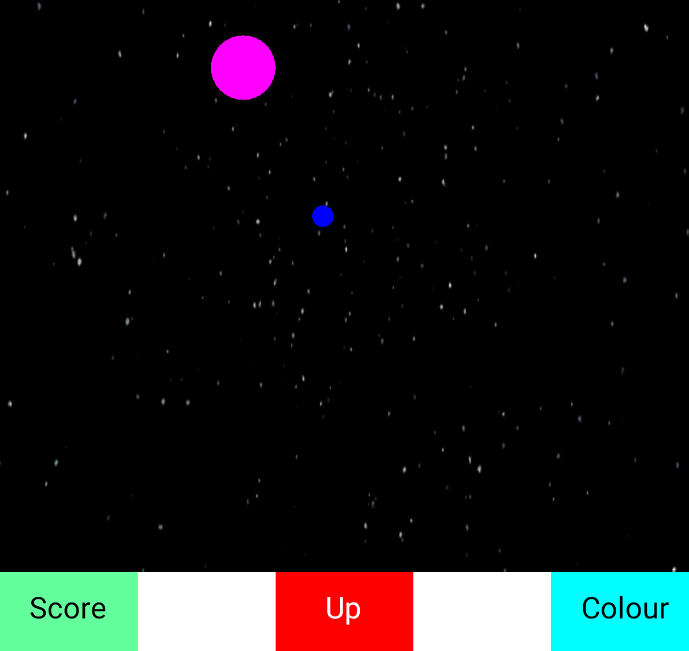
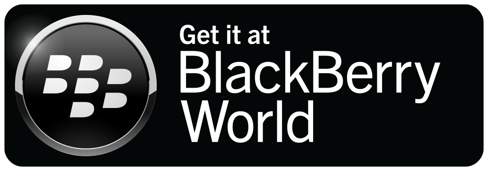
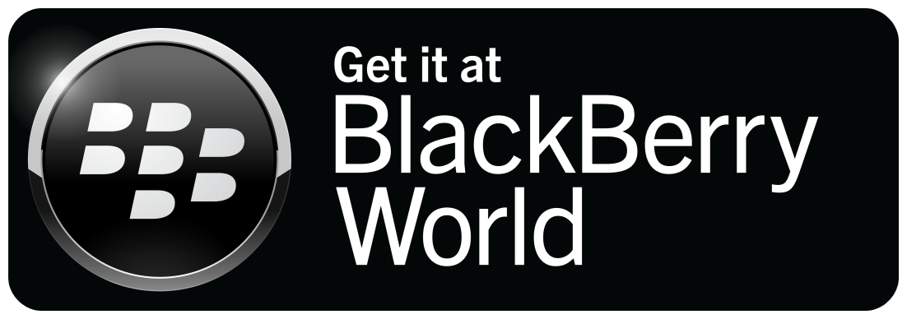

The third version of the game 'Ball Haul' was published on 29th December 2017. It brings out a new game mode, that is purely based on cookie clicker. For all those who feel they want to challenge the speed of their fingers, this is the perfect game. Intense and shortest gamemode made uptil date. Unlike the previous versions, this game lasts for 15 seconds.
Unlike the previous versions, this game is the simplest of them all. Easy to make, and easy to play. There is just a giant ball in the center of the screen, which the player is required to tap. Once tapped, the score is increased. However, to add more variation to the game, the ball changes colour everytime it is tapped. If the player is fast enough, he/she may be witnessing a rainbow on their screen. Beware... Do not tap too fast or you'll get seizures! (which also means you can't beat my score)
Download Version

Version 2
Published: 11/11/17
'Ball Haul' version 2 was published on 11th of november. Since the reviews of the first game published were so high, the creator of 'Ball Haul' decided to impress his fans with a second edition to the game. Like the first version, the game is 30 seconds long, and revolvs around catching balls. However, to keep a twist, the player should not collide with a dark blue or a black bal. This decreases the ball-size of the player. Whereas, colliding with bright balls increases the size.
The goal is to get as big as possible within the 30 second time limit. To boost the player up, I have added a 'Risk Ball'. Every second the ball alternates between black and golden. If the player colllects the ball when it is black, he/she will loose instantly. If the player is lucky, or has a lot of skill, he/she will colide with the ball when it is golden. Which will then make the player's ball increase by a large amount. Ths is a small easteregg that can only be used once in the game, and dessapears once the player uses it once.
Download Version

Version 1
Published: 14/10/17
Version one is the first version of 'Ball Hual'. It is the first edition of the game. Ball Haul was published on 14h of october 2017. There were many high reveiws about it. But like every other game, there were also downfalls. However, this game has provided a strong base to the ball haul series. It is a great start for a long running game.
Verision one is a 30 second long game, which includes the user's ball, and an enemy ball. The goal is to catch the enemy's ball as many times as possible. There are multiple personalisation options in this game. There are multiple colour options for the user's ball. There is also an option to speed up, or slow down the user's ball. The first version of the game simply has touch controls.

 
